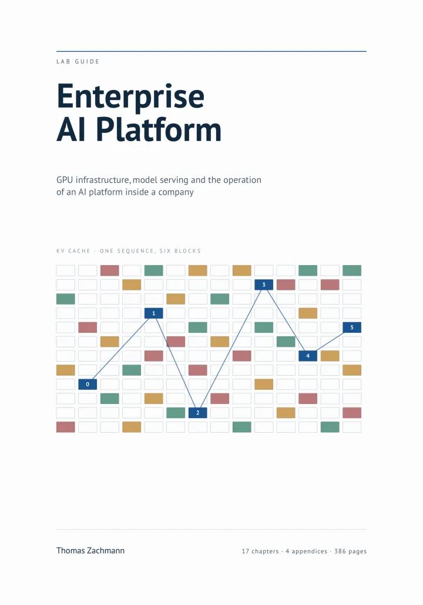

Enterprise AI Platform
Lab Guide — GPU Infrastructure, Model Serving and Operations
Why this book
Somewhere there is a server with two GPUs
Developers have long been using ChatGPT and Claude, often through private accounts. Business units have built proofs of concept that nobody operates. The data protection officer has questions. Procurement has seen an invoice that nobody can attribute to a team. And somewhere there is a server with two GPUs for which no operational process exists.
Whoever is to turn that into an operable platform needs different knowledge from the data scientist who picks the models, and different knowledge from the application developer who calls an API: GPUs in the cluster, the mechanics of inference servers, access control on models, cost attribution — and the question of which data may reach which model.
The book builds that platform piece by piece on a reference lab you can rebuild: one NVIDIA GPU with 24 GiB, passed through to a virtual machine, RKE2 across several nodes. Every lab names its prerequisite and its expected output, so you can tell whether it worked — and how you notice when it did not. Where the hardware runs out, the book says so instead of pretending: the tensor parallelism measurement in Chapter 9 rents a two-GPU instance by the hour, one to three euros for the whole series.
What you will operate
- vLLM — batching, prefix caching, chunked prefill, preemption and the KV cache made visible through the scheduler's own metrics; engine arguments set from a calculation instead of by guessing
- KServe — ServingRuntime and InferenceService, canary rollouts, autoscaling on the queue, scale-to-zero
- LiteLLM as the AI gateway — virtual keys, budgets, rate limits, model allowlists bound to the data class, fallbacks, spend logs per team
- NVIDIA GPU Operator, driver, Container Toolkit, DCGM Exporter — from PCI passthrough to a GPU the scheduler can allocate; MIG and time-slicing, including the memory isolation test that shows why one of them is unsuitable for tenants
- Keycloak and OpenBao — OIDC claims down to team and data class, and provider keys that no developer ever sees
- Prometheus and Grafana — the metrics that carry meaning for inference, and the ones that mislead
- Argo CD and Harbor — moving a 20 GB model artefact through a GitOps chain, with a rollback that takes minutes
- pgvector — a retrieval path with permission filtering inside the query, and erasure you can demonstrate
Also covered: Ray, Qdrant, Milvus, PostgreSQL, Redis, External Secrets, Proxmox VE and RKE2. Chapters 2 to 16 each end with a troubleshooting table; every chapter ends with interview questions at senior level, and with what separates a weak answer from a convincing one.
Contents
Six parts, from the card to the reference architecture
-
I
LLM Inference Fundamentals What actually happens on the card: prefill and decode, the KV cache, the VRAM budget, batching as the central lever, model formats and quantisation.
-
II
GPU Infrastructure How a card becomes a platform resource: the NVIDIA software stack, GPUs under Kubernetes, GPU sharing and multi-tenancy.
-
III
Model Serving vLLM from its architecture into production, distributed inference, KServe and the rest of the serving ecosystem.
-
IV
The Enterprise Layer An AI gateway with LiteLLM, identity, authorisation and secrets, AI security, governance and compliance.
-
V
Operations Observability and FinOps, operating the retrieval path, model lifecycle, GitOps and delivery.
-
VI
Synthesis Reference architectures and capacity planning in three sizes, worked through from under a hundred users to several thousand.
Four appendices follow, among them interview and whiteboard training, the reference repository, a command and configuration reference, a glossary and an index. Every chapter carries a version stamp naming what it was written and checked against.
Who it is for
Platform engineers who will be responsible for an AI platform rather than for choosing models. The book assumes Kubernetes, GitOps, identity providers and monitoring in production, and starts where those leave off. It is not a Kubernetes book and not a machine learning book: no transformers, no attention mathematics, no training and no finetuning.
The labs are there to make things measurable, not to be followed once and used up. The aim is to make the derivations available: why the KV cache and not the weights is the capacity bottleneck, why 100 percent GPU utilization can mean nothing at all, why self-hosting pays off above a certain utilization and not above a certain number of users.
This is the English edition. The material first appeared as a German lab guide, which the author still gives away on his own site.
NVIDIA is a trademark of NVIDIA Corporation. All other product names are trademarks of their respective owners. This book is an independent publication and is not affiliated with, authorized by, sponsored by, or otherwise approved by any of them.